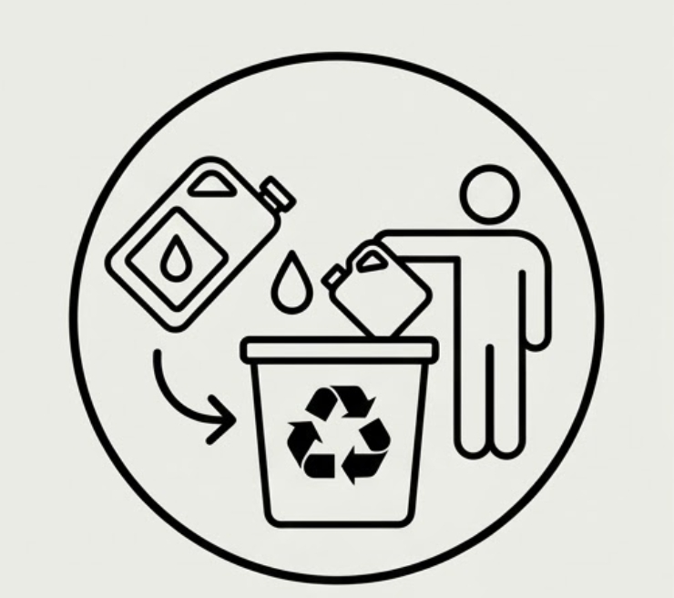
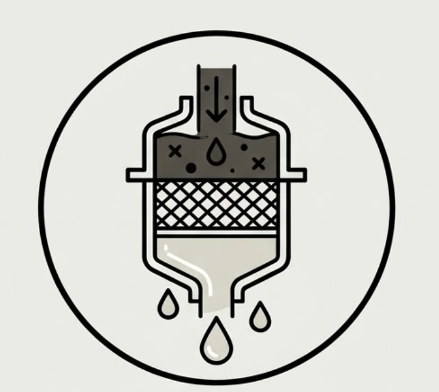
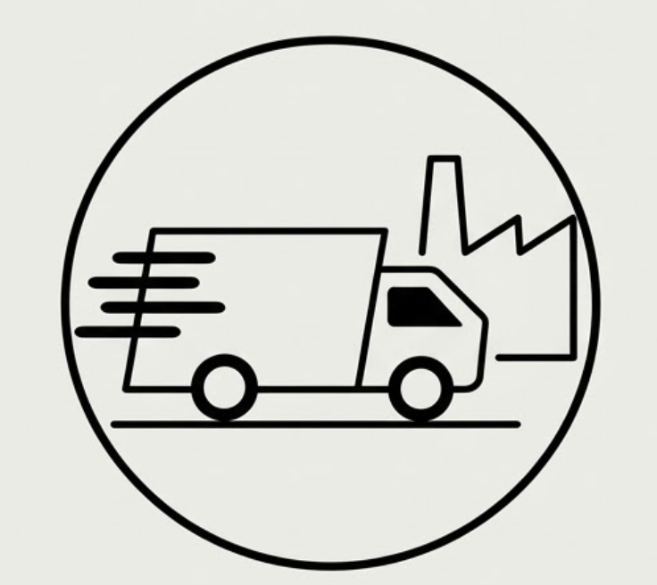
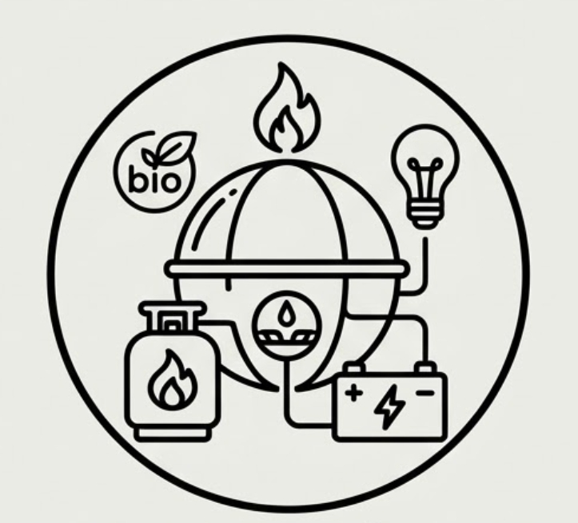

REUTILIZACIÓN DE ACEITE DOMÉSTICO
La problematica que nosotros planeamos resolver es la reutilización del aceite doméstico ya que el desecho inadecuado del aceite de cocina usado (RAUC) generado por hogares e instituciones es un grave problema ambiental y urbano, ya que la mayoría de la población desconoce cómo reutilizarlo o dónde desecharlo correctamente. Al verterlo habitualmente por el drenaje, este se enfría y se convierte en una grasa espesa que obstruye las tuberías de alcantarillado; además, tan solo un litro de aceite puede contaminar hasta 40,000 litros de agua en mantos freáticos y mares, degradando el suministro de agua potable y dañando la flora y fauna silvestres. Por estas razones, el aceite usado está catalogado como un residuo de manejo especial que no debe mezclarse con otros desechos para prevenir catástrofes ambientales.
La propuesta que nosotros proponemos consiste en implementar un sistema de recolección de aceite de cocina usado (RAUC) en la universidad, utilizando contenedores hechos de PETG equipados con filtros para eliminar sedimentos sólidos y partes quemadas. A diferencia de proyectos que elaboran subproductos como jabones o velas, esta iniciativa se enfoca en servir como punto de acopio accesible para la comunidad estudiantil, quienes llevarían el aceite desde sus hogares en recipientes reutilizables. El proyecto es económicamente factible y sostenible, ya que planea comprar el aceite usado a las personas y posteriormente venderlo, ya filtrado y listo para su procesamiento, a una empresa especializada encargada de darle un destino adecuado y evitar que contamine el drenaje.
La propuesta genera un impacto integral al instalar plantas recolectoras y puntos de acopio estratégicos en cafeterías, comedores y zonas gastronómicas. Esta infraestructura mejora la accesibilidad e incentiva la participación comunitaria, motivando a la población a depositar su aceite usado en recipientes adecuados en lugar de verterlo al drenaje. De este modo, se previenen obstrucciones en la red de alcantarillado, se reduce la contaminación del agua y del suelo, y se promueve una cultura de responsabilidad ambiental. Asimismo, la iniciativa impulsa la viabilidad económica al comercializar el aceite previamente filtrado a empresas procesadoras.
Este proyecto innovador optimiza la recolección de aceite de cocina usado instalando puntos de acopio comunitarios que reciben el residuo sin importar su estado inicial. A través de un sistema propio de filtración y separación de sedimentos sólidos, acondiciona el aceite para facilitar su posterior valorización en la producción de biocombustibles.
La propuesta ofrece un impacto integral al revalorizar el residuo de aceite de cocina usado (RAUC), evitando que al verterse al drenaje forme grasas que obstruyan el alcantarillado o cree capas impermeables que destruyan los ecosistemas acuáticos. Para resolverlo, instalamos centros de acopio sustentables, donde se realiza un prefiltrado que facilita a las industrias la producción final de biocombustibles. El modelo es económicamente viable y autosustentable al incentivar económicamente a la comunidad por sus entregas, costo que se recupera al vender el insumo pretratado a empresas especializadas, logrando además una gran aceptabilidad social al involucrar a la ciudadanía en el cuidado ambiental.



